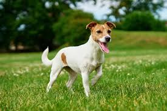
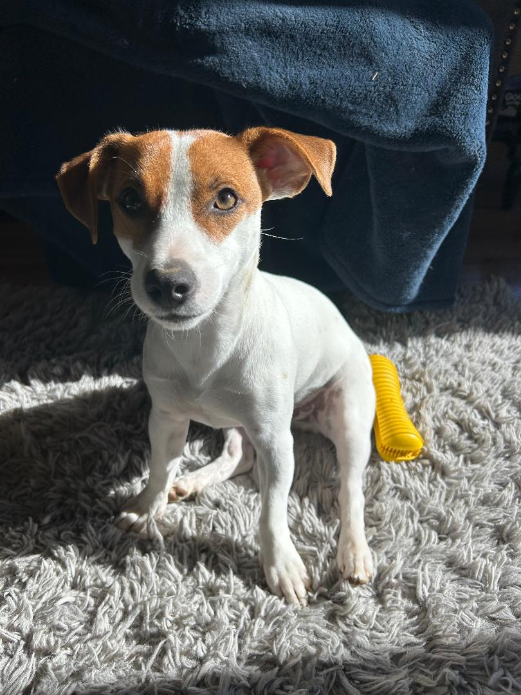

Jack Russell Terriers

Jack Russell Terriers are energetic, bold, and incredibly intelligent dogs originally bred for fox hunting. They are known for their agility, speed, and lively personalities.
Breed Characteristics
- Energy Level: Extremely high — they need lots of exercise.
- Temperament: Confident, alert, and playful.
- Training: Very smart but can be stubborn.
- Size: Small but muscular.
- Lifespan: 13–16 years.
Fun Facts
- Jack Russells can jump up to five times their height.
- They are often used in agility competitions.
- They were named after Reverend John Russell, who bred them in the 1800s.
Meet Ottis
Ottis is our 1 year old Jack Russell Terrier. Ottis was born on a farm near State College. When we picked him up, we knew this little guy would play a big part in our family. He is very close to his sister, Harper. They are best friends.
